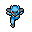
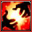
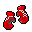
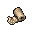
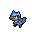

Pokédex / #447
Riolu #447
Fighting
It has the peculiar power of being able to see emotions such as joy and rage in the form of waves.
Generation 4 · Sinnoh

Stats
| Attack | 70 | |
|---|---|---|
| Defense | 40 | |
| Sp. Atk | 35 | |
| Sp. Def | 40 |
In the wild
| Wild level | 20–30 |
|---|---|
| HP | 40 |
| Experience | 5 |
| Egg groups | – |
Evolution
- Evolves into Lucario at level 35.
Moves
| Level | Move | Type | Category | Power | Energy | Cooldown | Effect | |
|---|---|---|---|---|---|---|---|---|
| 1 | Tackle | Normal | Physical | 15 | 15 | 1s | Tackle is one of the most common and basic moves a Pokemon learns. It deals damage with no additional effects. | |
| 1 | Foresight | Normal | Status | – | 70 | 60s | Foresight removes the Ghost type's immunity to Fighting-type and Normal-type moves for any moves used against the target. | |
| 1 | Quick Attack | Normal | Physical | 40 | 40 | 6s | Quick Attack deals damage and has no secondary effect. | |
| 1 | Endure | Normal | Status | – | 120 | 90s | The user endures any attack with at least 1 HP. Its chance of failing rises if it is used in succession. | |
| 6 |  | Counter | – | Physical | – | 100 | 90s | When hit by a Physical Attack, user strikes back with 2x power. |
| 11 | Feint | Normal | Physical | 30 | 30 | 5s | Feint hits through moves such as Protect or Detect and lifts their effect. It has a short cooldown. | |
| 15 | Force Palm | Fighting | Physical | 60 | 60 | 9s | Force Palm inflicts damage and has a 30% chance of paralyzing the target. | |
| 19 | Copycat | Normal | Status | – | 100 | 30s | The user mimics the move used immediately before it. The move fails if no other move has been used yet. | |
| 24 | Screech | Normal | Status | – | 100 | 35s | Screech lowers the target's Defense by two stages. | |
| 29 | Reversal | Fighting | Physical | 90 | 90 | 14s | Reversal deals more damage the lower the target HP. | |
| 47 | Nasty Plot | Dark | Status | – | 100 | 90s | Nasty Plot raises the user's Special Attack stat by two stages. |
Field abilities
Rock SmashHeadbuttStrengthDig
Special abilities
SteadfastInner Focus
Egg moves
AgilityBiteBlaze KickBullet PunchCircle ThrowCross ChopCrunchDetectIron DefenseLow KickMeteor MashMind ReaderSky UppercutVacuum Wave
Technical machines
Brick BreakBulk UpDouble TeamDrain PunchEarthquakeFacadeFocus PunchHidden PowerIron TailPoison JabProtectRain DanceRestRoarRock SlideRock TombSecret PowerSubstituteSwords DanceToxic
Drops
| Item | Amount | Chance | |
|---|---|---|---|
 | box gloves | 1 | 4% |
 | bandage | 1 | 4% |
 | riolu doll | 1 | 0.1% |
| Fist Plate | 1 | 0.002% | |
| lucarionite | 1 | 0.0002% | |
| lucarionite z | 1 | 0.0002% |